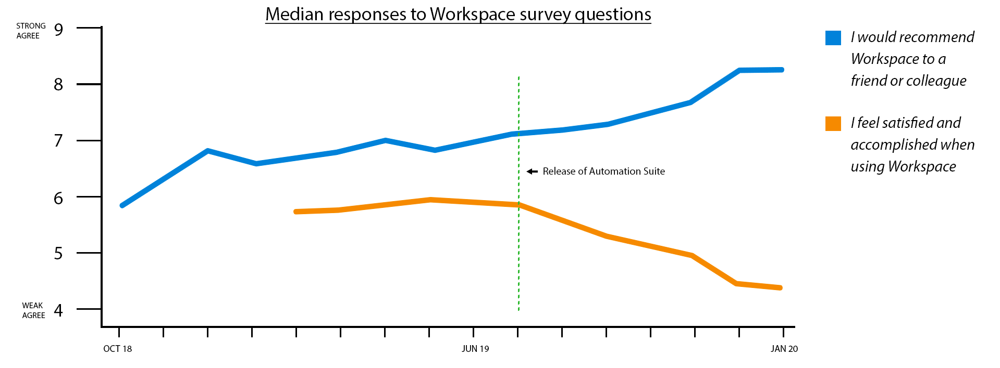
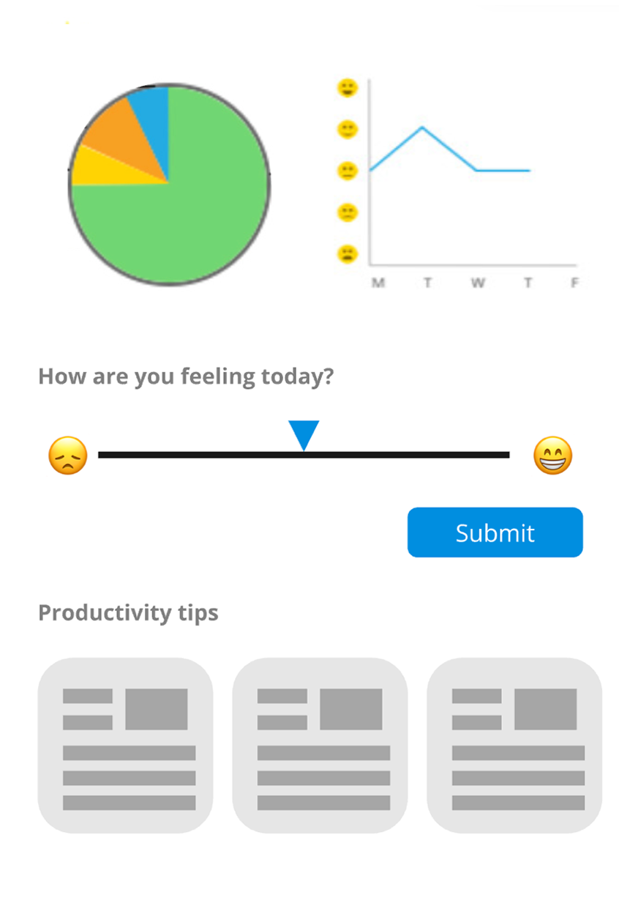
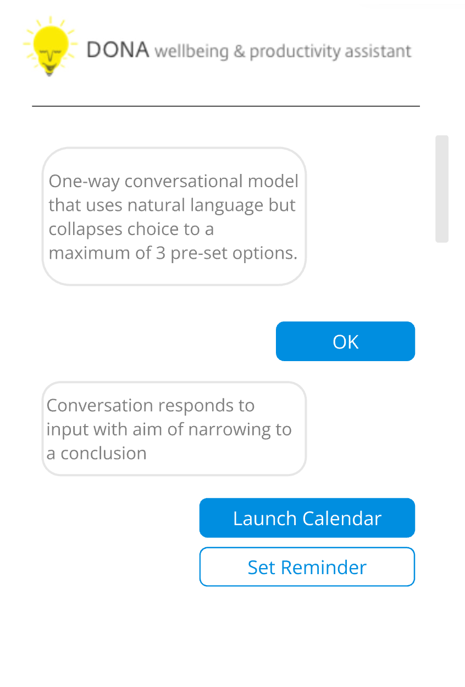
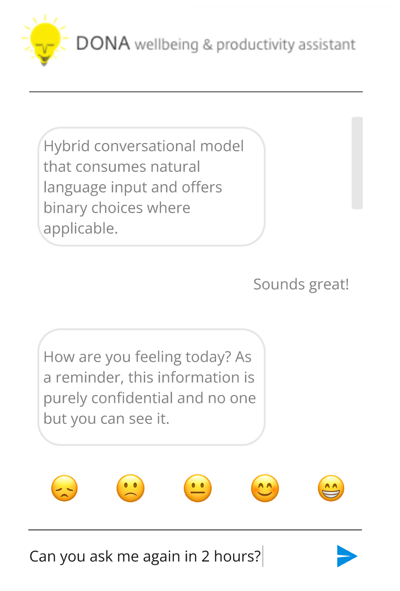

Prologue
was one of Citrix's flagship products. Hundreds of millions of people used it every day, and our team's mission was simple: help people get more done.
Everything we measured suggested we were succeeding - except for a single, stubborn metric: how people felt while using the tool.
Exploring this one contradiction persuaded an entire company to change course.
Act I
When success and reality disagree.
As part of the product-led growth team, my job was to deliver features that made Workspace more sticky and encourage customers to upgrade.
But despite improving scores in our regular NPS surveys, there was one statement that tracked in the opposite direction: “I feel satisfied and accomplished using Citrix Workspace.”

Since I was the one who lobbied to include a "more emotional" question in the survey, I was asked to try and explain it.
Act II
The Productivity Paradox.
Digging into the data with my behavioural science hat on, I began to believe that productivity may not be a universally positive goal. At least not in isolation.
It was no coincidence that we had released a major suite of automation tools around the time these scores started diverging.
Automation removes repetitive, low-effort work but it also removes the natural breathing space between demanding tasks. And as more small tasks get automated, only cognitively demanding work is left to fill in the gaps. Which leads to burnout.
I called this…
- Low-effort tasks
- High-cognitive tasks
We tend to do the hardest tasks when we have most energy, with low-effort work as breathing space in the lulls. Automate those smaller tasks away, and the gaps refill from the queue - eventually with nothing but cognitively demanding work.
The more efficiently we helped people work…
…the more likely we were to contribute to burnout.
Act III
Gathering evidence.
This made me think about the burgeoning mental health crisis amongst office workers so I conducted some in-depth interviews with those who had been signed off work for stress-related reasons.
I was struck by how overwhelmed people were reporting their lives at work and how progressions in technology, productivity and automation hadn't helped; and in some cases made things silently worse. The words of one user really struck a chord:

User interview
I wasn't aware that things had got on top of me until it was too late
This was a pattern that surfaced repeatedly: people rarely recognised burnout while it was happening.
What if productivity software could help people notice earlier? What if productivity tools cared about wellbeing too?
What if our productivity tool cared as much about how you felt about work as it did about how much work you got done?
Act IV
Testing a different future.
In business terms
Productivity tools should naturally care about well-being as a function of productivity.
It was this hypothesis that got me selected for Citrix's internal innovation programme.
I assembled a small team and we immediately set about… not building it. Our first goal wasn't to prove the idea. It was to break it.


The process of covering lots of conceptual territory early on involved workshops and walls of exploration over many sessions.
There was no easy way to build a 'minimal, viable' AI-powered wellbeing and productivity engine in 2019. But we still needed to answer our riskiest assumptions.
So we ran a simple 'Wizard-of-Oz' experiment over the corporate Slack instance. With much fanfare we “launched” a top secret, early beta, intelligent work assistant that could be accessed with a set of shortcuts.
And then, for four weeks…
…we pretended to be the AI.

We had some pretty risky assumptions and pretty big questions to address. And the quickest and cheapest way to test our product vision was to fake it.
- "Does this help?”
- "Can we build it?”
- “Would people use it?”
- “Would anyone trust it?”
- “Do we have permission to operate here?”

The results were surprisingly positive. That gave us enough confidence to build an MVP. We called this project DONA - from the Latin dona nobis pacem: give us peace.
Act V
Designing for ambiguity.
Only then did we start designing the product.
While my original vision was ambitious and far-reaching, we reduced the scope of the MVP to a single, core feature: The daily check-in.
Dashboard

Marketplace

My north star mockups imagined a plugin that contained its own marketplace of well-being and productivity-based micro-apps.
Designing what you can't measure
Wellbeing isn't like page load speed or conversion rate. There isn't a single objective metric that tells you how someone is feeling.
So I combined two different kinds of signal:
- Human data - how people reported feeling.
- Behavioural data - indicators that suggested how much capacity they actually had.
Drawing on behavioural psychology, I also wanted to understand what people didn't do. Procrastination, avoidance and changing patterns of work can be just as revealing as the work itself.
| Measurable | Predicts |
|---|---|
| Self-declared wellbeing + trends | Resiliency and future health |
| Time of day that DONA is engaged with | Reactiveness and workload |
| Number of times DONA prompt is snoozed | Stress and time management ability |
| Regularity and consistency of use | Durability and engagement |
| Pulse surveys scoring helpfulness and health impact | Validates the predictors above |
Human and machine data work in conjunction to deliver a core “capability score” that informed DONA's recommendations.
We would go on to earn a patent for this idea: a personalised based on a capability score and wellbeing feedback loop.
Designing a conversation
We quickly realised that tone mattered as much as functionality.
Our Wizard-of-Oz experiment had unexpectedly shown that people were remarkably comfortable talking about wellbeing through chat.
Rather than assuming this was the right interface, we tested alternatives.



We investigated various methods of capturing user well-being; open chat wasn't just preferred, it encouraged extra sharing.
Open conversation consistently outperformed simpler input methods.
The extra engineering effort was justified because the medium itself appeared to reduce the emotional barrier to engagement.
Designing the moment
The daily check-in became the most important interaction in the product.
It had to be visible enough to encourage daily engagement within the context of an already demanding and complex interface.


We A/B tested a number of designs and approaches; emoji-based interfaces won out over text despite our reservations of appearing too flippant.
Initially we worried emojis might feel too informal. But it shouldn't be surprising that user testing suggested the opposite.
Emojis are:
- familiar
- quick to interpret
- culturally widespread
- emotionally flexible
They allowed people to project their own nuanced emotional state onto an intentionally ambiguous symbol rather than words which trigger an internal debate around best match (“Am I feeling 'Meh' or is it more 'Not Good'”).
Ambiguity gave the check-in an immediacy. Ambiguity turned out to be a feature, not a bug.
In Workspace

The finished check-in prompt in situ within Workspace.
Conversation

Responding to the check-in leads to a deeper chat where a natural conversation about recommendations can be had.
Act VI
Different stories for different audiences.
Building and designing a working prototype was just half the battle.
DONA wasn't simply a product. If it were to be integrated with Workspace, it would represent a massive shift in how Citrix talked about productivity and involve multiple areas of the business.
Winning support meant bringing multiple audiences on-side. As a behavioural designer I knew the most persuasive tool is a good story.


DONA received something rarer than executive sponsorship - it was deemed so important that it became part of Citrix's global marketing campaign.

Epilogue
Metrics aren't truth.
There's a famous aphorism I come back to a lot:
“Not everything that can be counted counts, and not everything that counts can be counted.”
Most organisations optimise - naturally - for what they can easily measure. Clicks. Speed. Efficiency. Productivity.
But while this leads to sensible and logical individual decisions, collectively, in aggregate, something quite irrational can arise: you stop seeing the human story and only see the statistical one. That was our mistake.
Because productivity isn't the goal. People are.